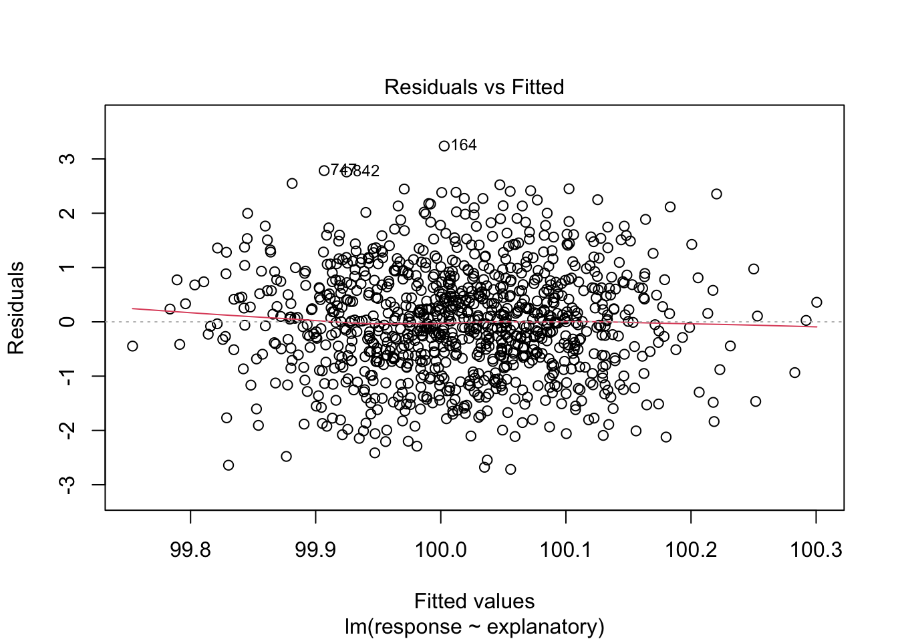

Chapter16 Quantile Regression
Quantile regression is a specialized regression technique that estimates the conditional median or other quantiles of a response variable. It is particularly useful when the response variable is not normally distributed or when the relationship between the response variable and the predictor variables is not linear or there is heteroscedasticity.
Quantile regression was first developed by Koenker and Bassett (1978) and Bassett and Koenker (1978) and has since been widely used in a variety of fields, including economics, finance, and epidemiology. This approach is particularly useful when the conditional distribution of the response variable is asymmetric or when the relationship between the response variable and the predictor variables varies across different quantiles. In other words it is a robust regression technique that is not sensitive to outliers and can provide a more complete picture of the relationship between the response variable and the predictor variables.
In this chapter, we will provide an overview of quantile regression, discuss its advantages and disadvantages, and demonstrate how to perform quantile regression in R using the quantreg package.
16.1 Overview
Quantile regression is a regression technique that estimates the conditional quantiles of a response variable given a set of predictor variables. Unlike ordinary least squares (OLS) regression, which estimates the conditional mean of the response variable, quantile regression estimates the conditional quantiles, such as the median, 25th percentile, or 75th percentile. By estimating the conditional quantiles, quantile regression provides a more complete picture of the relationship between the response variable and the predictor variables, allowing for a more nuanced analysis of the data.
16.2 The model
The quantile regression model can be written as:
\[Q_{\tau}(Y|X) = X\beta_{\tau}\]
where:
- \(Q_{\tau}(Y|X)\) is the \(\tau\)-th quantile of the response variable \(Y\) given the predictor variables \(X\),
- \(\beta_{\tau}\) is the vector of coefficients for the predictor variables,
- \(\tau\) is the quantile level, which ranges from 0 to 1.
The goal of quantile regression is to estimate the coefficients \(\beta_{\tau}\) that minimize the sum of the absolute deviations between the observed values of the response variable and the estimated quantiles.
Quantile regression can be performed for multiple quantile levels, allowing for a more comprehensive analysis of the relationship between the response variable and the predictor variables.
16.3 The assumptions of quantile regression
Quantile regression does not make the same assumptions as OLS regression, such as linearity, homoscedasticity, and normality of residuals. Instead, quantile regression estimates the conditional quantiles of the response variable directly, making it more robust to violations of these assumptions.
However, quantile regression does assume that the errors are independent and identically distributed (i.i.d.), which is a common assumption in regression analysis.
16.4 Visualization
To visualize the results of quantile regression, we can create quantile regression plots, which show the estimated quantiles of the response variable as a function of the predictor variables. These plots provide a visual representation of the relationship between the response variable and the predictor variables at different quantile levels.
In the following example, we will demonstrate how to perform quantile regression in R using the quantreg package and create quantile regression plots to visualize the results.
16.5 Example: Quantile regression in R
In this example, we will use the quantreg package to perform quantile regression on the mtcars dataset, which contains information about various car models. We will estimate the conditional quantiles of the miles per gallon (mpg) variable given the weight (wt) variable.
First, we will load the quantreg package and the mtcars dataset:
https://ggplot2.tidyverse.org/reference/geom_quantile.html
Usamos un conjunto de datos de ejemplo llamado mtcars, que contiene información sobre diferentes modelos de automóviles. En particular, nos interesa la relación entre el desplasamiento (displ) del motor en litros y la cantidad de milas por galon . Para visualizar esta relación, ajustaremos un modelo de regresión cuantílica y trazaremos las estimaciones de los cuantiles condicionales de mpg en función de wt. El data frame mpg contiene se encuentra el el paquete ggplot2 las siguientes variables:
## Loading required package: SparseM## # A tibble: 6 × 11
## manufacturer model displ year cyl trans drv cty hwy fl class
## <chr> <chr> <dbl> <int> <int> <chr> <chr> <int> <int> <chr> <chr>
## 1 audi a4 1.8 1999 4 auto(l5) f 18 29 p compa…
## 2 audi a4 1.8 1999 4 manual(m5) f 21 29 p compa…
## 3 audi a4 2 2008 4 manual(m6) f 20 31 p compa…
## 4 audi a4 2 2008 4 auto(av) f 21 30 p compa…
## 5 audi a4 2.8 1999 6 auto(l5) f 16 26 p compa…
## 6 audi a4 2.8 1999 6 manual(m5) f 18 26 p compa…Note that the pattern of dispersion increases as the engine displacement increases. This suggests that the relationship between engine displacement and miles per gallon is not linear and that the variance of mpg increases with engine displacement. To capture this non-linear relationship and heteroscedasticity, we will fit a quantile regression model and plot the conditional quantile estimates of mpg as a function of wt.
The linear regression (in red) is added to the plot with its confidence interval (shaded grey) and the quantiles of the quantile regression (in blue). Note that the quantile regression captures the non-linear relationship between displ and mpg and the heteroscedasticity in the errors, while the linear regression does not.
ggplot(mpg, aes(x = displ, y = 1/hwy)) +
geom_point() +
geom_quantile()+
geom_smooth(method = "lm", se = TRUE, color="red")## Smoothing formula not specified. Using: y ~ x
## `geom_smooth()` using formula = 'y ~ x'Adding quantiles to the plot
In this figure we add only the quantile 0.5, which corresponds to the median of the conditional distribution of mpg given wt.
ggplot(mpg, aes(x = displ, y = 1/hwy)) +
geom_point() +
geom_quantile(quantiles = 0.5, color = "blue")## Smoothing formula not specified. Using: y ~ xAdding multiples quantiles
Using multiple quantiles one clearly see the relationship between the predictor and the response variable and the quantiles are not equally dispersed. The median quantile is in blue, while the 25th and 75th are in red. Note that the quantiles are not equally dispersed around the median, which suggests that the relationship between displ and mpg is not linear and that the variance of mpg increases with displ.
q5 <- seq(0.05, 0.95, by=0.05) #quantile levels in steps of 5.
ggplot(mpg, aes(x = displ, y = 1/hwy)) +
geom_point() +
geom_quantile(quantiles = q5, colour = "grey")+
geom_quantile(quantiles = 0.5, color = "blue")+
geom_quantile(quantiles = 0.25, color = "red")+
geom_quantile(quantiles = 0.75, color = "red")16.6 The quantile regression model, rq()
To ajust a quantile regression model, we use the rq() function from the quantreg package. The rq() function takes two main arguments: the formula that specifies the model and the data frame that contains the data. In this case, we will fit a quantile regression model to estimate the median of mpg given wt.
tau = 0.5 specifies the quantile we want to estimate, in this case, the median of the conditional distribution of mpg given wt.
The interpretation of the quantile regression model is similar to that of a linear regression model, but instead of estimating the conditional mean of the response variable, we estimate the specified conditional quantile.
In this case, the quantile regression model estimates the median of mpg given wt has a coefficient of 0.0076, which suggests that for every one-unit increase in displ, the median of 1/hwy increases by 0.0076. The p-value associated with the coefficient is less than 0.05, indicating that the coefficient is significantly different from zero.
The summary of the quantile regression model also provides the standard error, t-value, and p-value for the coefficient, as well as the residual standard error and the number of observations used in the model.
# djusting a quantile regression model
model <- rq(1/hwy ~ displ, data = mpg, tau = 0.5)
summary(model)## Warning in rq.fit.br(x, y, tau = tau, ci = TRUE, ...): Solution may be
## nonunique##
## Call: rq(formula = 1/hwy ~ displ, tau = 0.5, data = mpg)
##
## tau: [1] 0.5
##
## Coefficients:
## coefficients lower bd upper bd
## (Intercept) 0.01927 0.01610 0.02099
## displ 0.00761 0.00664 0.0087416.7 nlrq() function
To model with this function, you need to install the quantreg package and load it into the R session.
nlrq() is a function that fits a non-linear quantile regression model. This function takes two main arguments: the formula that specifies the model and the data frame that contains the data. In this case, we will fit a non-linear quantile regression model to estimate the median of mpg given wt. the advantage is that we can calcylate the quantiles of the conditional distribution of mpg given wt for a series of x values and visualize bteer the dispersion.
Nice pattern, but not realistic of a biological data set.
SSlogis = Self-Starting Nls Logistic Model
This is used to fit a logistic curve to data. The curve is defined as:
\[f(x) = \frac{Asym}{1 + exp((x-mid)/scal)}\]
where:
- Asym is the asymptote of the curve,
- mid is the x-value at the inflection point of the curve,
- scal is a scaling parameter that determines the steepness of the curve.
In this example, we will use the SSlogis function to generate a logistic curve with Asym = 10, mid = 12, and scal = 2, and add some random noise to the data. We will then fit a non-linear least squares regression to the data using the nls function, and compare the results to a quantile regression using the nlrq function.
Dat <- NULL; Dat$x <- rep(1:25, 20)
set.seed(1)
Dat$y <- SSlogis(Dat$x, 10, 12, 2)*rnorm(500, 1, 0.1)
plot(Dat)
# fit first a nonlinear least-square regression
Dat.nls <- nls(y ~ SSlogis(x, Asym, mid, scal), data=Dat); Dat.nls## Nonlinear regression model
## model: y ~ SSlogis(x, Asym, mid, scal)
## data: Dat
## Asym mid scal
## 9.968 11.947 1.962
## residual sum-of-squares: 241.8
##
## Number of iterations to convergence: 0
## Achieved convergence tolerance: 6.921e-07lines(1:25, predict(Dat.nls, newdata=list(x=1:25)), col=1)
# then fit the median using nlrq
Dat.nlrq <- nlrq(y ~ SSlogis(x, Asym, mid, scal), data=Dat, tau=0.5, trace=TRUE)## 109.059 : 9.968027 11.947208 1.962113
## final value 108.942725
## converged
## lambda = 1
## 108.9427 : 9.958648 11.943273 1.967144
## final value 108.490939
## converged
## lambda = 0.9750984
## 108.4909 : 9.949430 11.987472 1.998607
## final value 108.471416
## converged
## lambda = 0.9999299
## 108.4714 : 9.94163 11.99077 1.99344
## final value 108.471243
## converged
## lambda = 1
## 108.4712 : 9.941008 11.990550 1.992921
## final value 108.470935
## stopped after 4 iterations
## lambda = 0.8621249
## 108.4709 : 9.942734 11.992773 1.993209
## final value 108.470923
## converged
## lambda = 0.9999613
## 108.4709 : 9.942629 11.992728 1.993136
## final value 108.470919
## converged
## lambda = 1
## 108.4709 : 9.942644 11.992737 1.993144
## final value 108.470919
## converged
## lambda = 1
## 108.4709 : 9.942644 11.992737 1.993144
## final value 108.470919
## converged
## lambda = 1
## 108.4709 : 9.942644 11.992737 1.993144lines(1:25, predict(Dat.nlrq, newdata=list(x=1:25)), col=2)
# the 1st and 3rd quartiles regressions
Dat.nlrq <- nlrq(y ~ SSlogis(x, Asym, mid, scal), data=Dat, tau=0.25, trace=TRUE)## 108.6656 : 9.968027 11.947208 1.962113
## final value 89.108243
## converged
## lambda = 1
## 89.10824 : 9.432250 11.803924 1.923472
## final value 85.688895
## converged
## lambda = 1
## 85.6889 : 9.183598 11.794244 1.929699
## final value 85.473712
## converged
## lambda = 0.6405076
## 85.47371 : 9.212527 11.844090 1.938003
## final value 85.447786
## converged
## lambda = 1
## 85.44779 : 9.234097 11.863975 1.949241
## final value 85.446407
## converged
## lambda = 1
## 85.44641 : 9.242009 11.866644 1.954192
## final value 85.445691
## converged
## lambda = 1
## 85.44569 : 9.234247 11.864554 1.952338
## final value 85.444920
## converged
## lambda = 1
## 85.44492 : 9.232975 11.863979 1.953587
## final value 85.443854
## converged
## lambda = 0.363237
## 85.44385 : 9.233661 11.864280 1.957197
## final value 85.443668
## stopped after 3 iterations
## lambda = 0.8495473
## 85.44367 : 9.233453 11.860020 1.957831
## final value 85.443667
## converged
## lambda = 0.008522445
## 85.44367 : 9.233449 11.860007 1.957814
## final value 85.443584
## converged
## lambda = 1
## 85.44358 : 9.232996 11.859020 1.955928
## final value 85.443586
## converged
## lambda = 0.9999957
## 85.44359 : 9.232995 11.859024 1.955916lines(1:25, predict(Dat.nlrq, newdata=list(x=1:25)), col=3)
Dat.nlrq <- nlrq(y ~ SSlogis(x, Asym, mid, scal), data=Dat, tau=0.75, trace=TRUE)## 109.4525 : 9.968027 11.947208 1.962113
## final value 89.561436
## converged
## lambda = 1
## 89.56144 : 10.64021 12.13202 2.02044
## final value 87.302043
## converged
## lambda = 1
## 87.30204 : 10.652294 11.966018 1.958371
## final value 87.200715
## converged
## lambda = 1
## 87.20072 : 10.666754 11.953497 1.962447
## final value 87.131462
## converged
## lambda = 0.8659451
## 87.13146 : 10.639094 11.949236 1.971242
## final value 87.125795
## converged
## lambda = 0.6273927
## 87.1258 : 10.647784 11.962635 1.975851
## final value 87.122717
## converged
## lambda = 0.8041119
## 87.12272 : 10.647957 11.963190 1.973657
## final value 87.121592
## converged
## lambda = 1
## 87.12159 : 10.649877 11.962363 1.973516
## final value 87.121427
## converged
## lambda = 1
## 87.12143 : 10.649051 11.961685 1.973086
## final value 87.121355
## converged
## lambda = 0.5468903
## 87.12135 : 10.648209 11.961208 1.972643
## final value 87.121400
## converged
## lambda = 0.9999045
## 87.1214 : 10.648073 11.961122 1.972568lines(1:25, predict(Dat.nlrq, newdata=list(x=1:25)), col=3)
# and finally "external envelopes" holding 95 percent of the data
Dat.nlrq <- nlrq(y ~ SSlogis(x, Asym, mid, scal), data=Dat, tau=0.025, trace=TRUE)## 108.3114 : 9.968027 11.947208 1.962113
## final value 62.166616
## converged
## lambda = 1
## 62.16662 : 9.432250 11.803924 1.923472
## final value 16.887325
## converged
## lambda = 1
## 16.88732 : 8.006640 11.718631 1.979243
## final value 15.823276
## converged
## lambda = 0.7133884
## 15.82328 : 8.135460 12.048708 1.987995
## final value 15.732737
## stopped after 3 iterations
## lambda = 0.7726586
## 15.73274 : 8.042059 12.019442 1.994386
## final value 15.732737
## converged
## lambda = 0
## 15.73274 : 8.042059 12.019442 1.994386lines(1:25, predict(Dat.nlrq, newdata=list(x=1:25)), col=4)
Dat.nlrq <- nlrq(y ~ SSlogis(x, Asym, mid, scal), data=Dat, tau=0.975, trace=TRUE)## 109.8066 : 9.968027 11.947208 1.962113
## final value 56.575819
## converged
## lambda = 1
## 56.57582 : 10.672415 12.148657 2.027285
## final value 20.551829
## converged
## lambda = 1
## 20.55183 : 11.923558 12.366710 2.121476
## final value 17.268734
## converged
## lambda = 1
## 17.26873 : 12.266850 12.051876 2.060768
## final value 17.194623
## converged
## lambda = 0.5512476
## 17.19462 : 12.176373 12.020546 2.003537
## final value 17.175845
## converged
## lambda = 0.900139
## 17.17585 : 12.180837 12.005129 2.019783
## final value 17.175761
## converged
## lambda = 0.1504766
## 17.17576 : 12.177202 12.003960 2.011709
## final value 17.175612
## converged
## lambda = 1
## 17.17561 : 12.18154 12.00534 2.01894
## final value 17.175603
## converged
## lambda = 1
## 17.1756 : 12.181679 12.005403 2.019175
## final value 17.175518
## converged
## lambda = 1
## 17.17552 : 12.17954 12.00469 2.01453
## final value 17.175518
## converged
## lambda = 0
## 17.17552 : 12.17954 12.00469 2.01453lines(1:25, predict(Dat.nlrq, newdata=list(x=1:25)), col=4)
leg <- c("least squares","median (0.5)","quartiles (0.25/0.75)",".95 band (0.025/0.975)")
legend(1, 12.5, legend=leg, lty=1, col=1:4)
https://stackoverflow.com/questions/51223379/how-get-plot-from-nlrq-in-r
Need a better data set.
To adjust a non-linear quantile regression model, we use the nlrq() function from the quantreg package. The nlrq() function takes two main arguments: the formula that specifies the model and the data frame that contains the data. In this case, we will fit a non-linear quantile regression model to estimate the median of mpg given wt.
The formula specifies the model, which in this case is a non-linear model that estimates the conditional median of mpg given wt using the SSlogis function. The SSlogis function is a self-starting logistic model that defines a logistic curve with three parameters: Asym, mid, and scal.
The tau argument specifies the quantile level we want to estimate, in this case, the median of the conditional distribution of mpg given wt.
Asymrefers to the asymptote of the curve,midis the x-value at the inflection point of the curve,scalis a scaling parameter that determines the steepness of the curve.
The summary of the non-linear quantile regression model provides the estimated coefficients for the parameters Asym, mid, and scal, as well as the standard errors, t-values, and p-values for the coefficients. The residual standard error and the number of observations used in the model are also provided.
# Adjusting a non-linear quantile regression model
model_nlrq <- nlrq(1/hwy ~ SSlogis(displ, Asym, mid, scal), data = mpg, tau=0.5)
summary(model_nlrq)##
## Call: nlrq(formula = 1/hwy ~ SSlogis(displ, Asym, mid, scal), data = mpg,
## tau = 0.5, control = list(maxiter = 100, k = 2, InitialStepSize = 1,
## big = 1e+20, eps = 1e-07, beta = 0.97), trace = FALSE)
##
## tau: [1] 0.5
##
## Coefficients:
## Value Std. Error t value Pr(>|t|)
## Asym 0.07233 0.01221 5.92518 0.00000
## mid 2.20424 0.74844 2.94513 0.00356
## scal 2.18291 0.69912 3.12238 0.0020216.8 Multivariate quantile regression
In the previous examples, we estimated the conditional quantiles of the response variable given a single predictor variable. However, quantile regression can be extended to include multiple predictor variables, allowing for a more comprehensive analysis of the relationship between the response variable and the predictor variables.
In this example, we will fit a multivariate quantile regression model to estimate the median of mpg given wt and hp. The formula specifies the model, which includes both wt and hp as predictor variables. The tau argument specifies the quantile level we want to estimate, in this case, the median of the conditional distribution of mpg given wt and hp.
The summary of the multivariate quantile regression model provides the estimated coefficients for the predictor variables wt and hp, as well as the standard errors, t-values, and p-values for the coefficients. The residual standard error and the number of observations used in the model are also provided.
Here is another function to evaluate a mutiple quantile regression model and their confidence intervals.
https://www.rdocumentation.org/packages/ggstatsplot/versions/0.6.5
See also
https://broom.tidymodels.org/reference/augment.nlrq.html
## You can cite this package as:
## Patil, I. (2021). Visualizations with statistical details: The 'ggstatsplot' approach.
## Journal of Open Source Software, 6(61), 3167, doi:10.21105/joss.03167## Warning in rq.fit.br(x, y, tau = tau, ci = TRUE, ...): Solution may be
## nonunique##
## Call: quantreg::rq(formula = mpg ~ am * cyl - 1, data = mtcars)
##
## tau: [1] 0.5
##
## Coefficients:
## coefficients lower bd upper bd
## am 39.60000 36.10924 52.74217
## cyl 2.05000 1.83548 2.37127
## am:cyl -5.12500 -7.25166 -4.51242To visualize the results of the multivariate quantile regression model, we can use the ggcoefstats() function from the ggstatsplot package. This function creates a plot that displays the estimated coefficients for the predictor variables, along with their confidence intervals and p-values.
The plot shows the estimated coefficients for the predictor variables wt and hp, as well as their confidence intervals and p-values. The confidence intervals provide a range of values within which we can be confident that the true coefficient lies, while the p-values indicate whether the coefficient is significantly different from zero.
## Warning in rq.fit.br(x, y, tau = tau, ci = TRUE, ...): Solution may be
## nonunique16.9 Conclusion
Quantile regression is a powerful regression technique that estimates the conditional quantiles of a response variable given a set of predictor variables. It is particularly useful when the response variable is not normally distributed or when the relationship between the response variable and the predictor variables is not linear or there is heteroscedasticity.
The relationship still does assume some type of linear model, but it is more robust to outliers and can provide a more complete picture of the relationship between the response variable and the predictor variables. By estimating the conditional quantiles, quantile regression allows for a more nuanced analysis of the data and can provide valuable insights into the relationship between the response variable and the predictor variables.
If model is expected to be non-linear maybe a LOESS regression is more appropriate.
References:
Koenker, Roger, and Gilbert Bassett Jr. “Regression quantiles.” Econometrica: journal of the Econometric Society (1978): 33-50.
Bassett, G., & Koenker, R. (1978). Asymptotic Theory of Least Absolute Error Regression. Journal of the American Statistical Association, 73(363), 618–622. https://doi.org/10.1080/01621459.1978.10480065